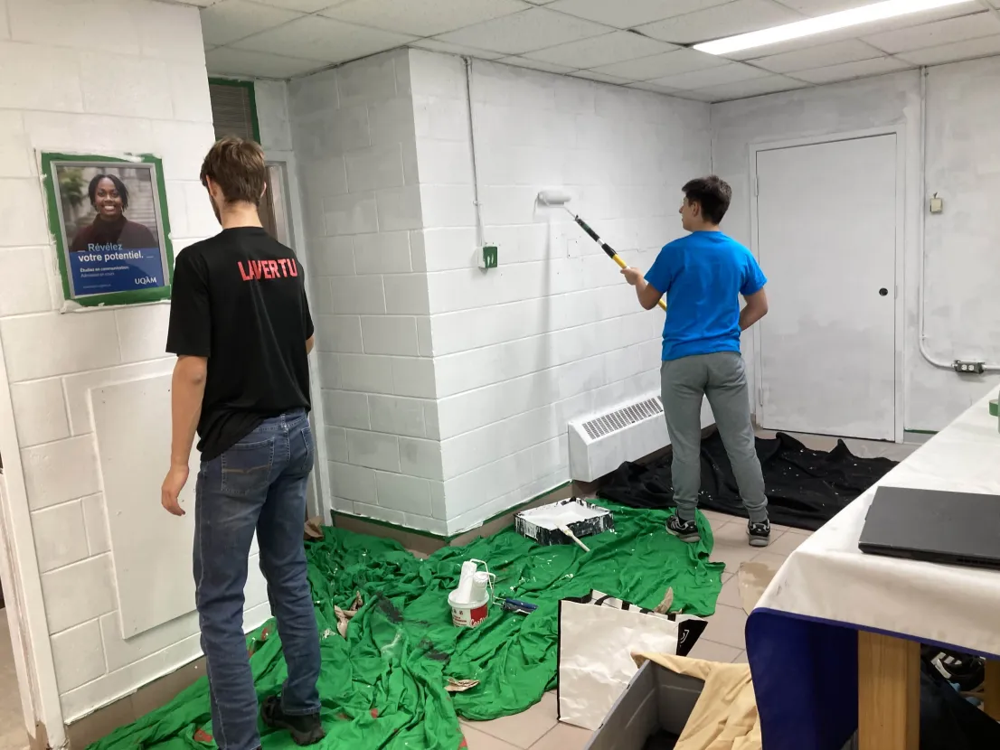

Nouvelle année nouveau loceaux !
Malgré les nombreux travaux entrepris par le collège et le fait qu'il ne sache pas ou mettre les étudient (e), le club a hérité d'un nouveau local. Nous sommes content (e) de cette acquisition.


La Nouvelle acquisiton
Le Pére Noël nous a livré notre cadeau en avant cette année, au mois d'octobre on a reçu notre commande Original Prusa Core One Kit d'imprimante 3D, feuilles d'impression amovibles, kit DYI pour imprimante 3D pour débutants, amusant à assembler, étalonnage automatique, échantillon de filament inclus.
L'équipe se sert de cette imprimante pour créer des objets et des prototypes, soit pour le robot et pour le kiosques

Un plan pour un kiosque et un thème pas si évident que trouver
En septembre, l'équipe s'est mise à la recherche d'un thème pour la compétition. Cela a été un défi, car qu'il y avait les thèmes qui débat: le métro de Montréal, le petit Prince et Charlie Chaplin.
Toutefois, si vous ne l'avez pas encore compris le thème victorieux est le métro de Montréal. Le kiosque aura l'allure d'un quai de station et renfermera quelque surprises à l'intérieur.
Martin et ses bricolas
Ce kiosque était un vrais joke on a dû au moins le démonter et le remonter plusieurs fois. Une fois parce que c'était le thème de l'année passée, on l'a remonté pour vérifier les dimensions.
En remontant le kiosque, on a découvert que les planches n'étaient pas utilisables. Martin et ses coéquipiers sont allés chercher des planches de remplacement. On a dû démonter et remonter le kiosque un fois de plus.
Le projet a été un vrai casse-tête, mais l'équipe a réussi à le terminer à temps.
2 versions pour Bob
Cette année Bob a connu deux versions différentes. La première version était une version de base, et la deuxième version a été améliorée avec des fonctionnalités supplémentaires.
il a eu des problémes de moteur et d'équilibre mais l'équipe a réussi à les corrigers.